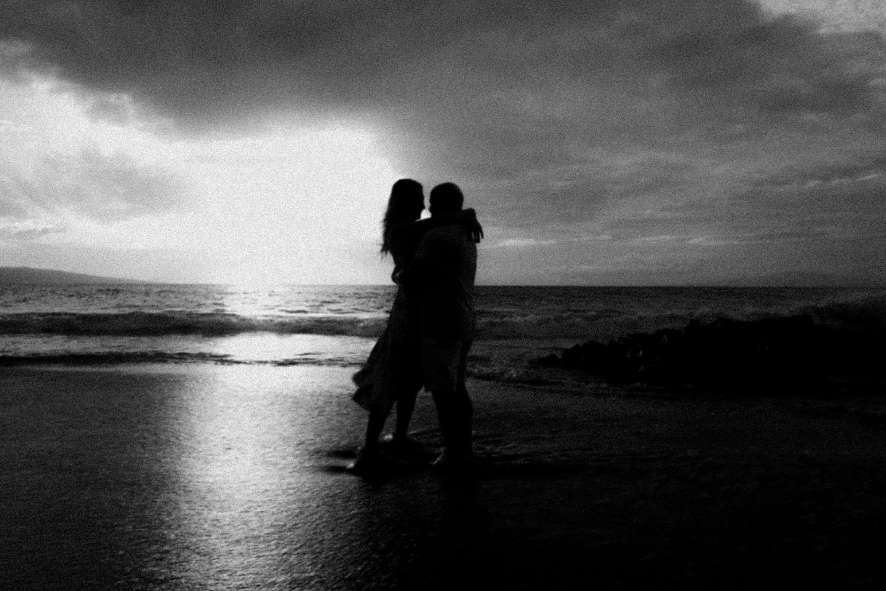
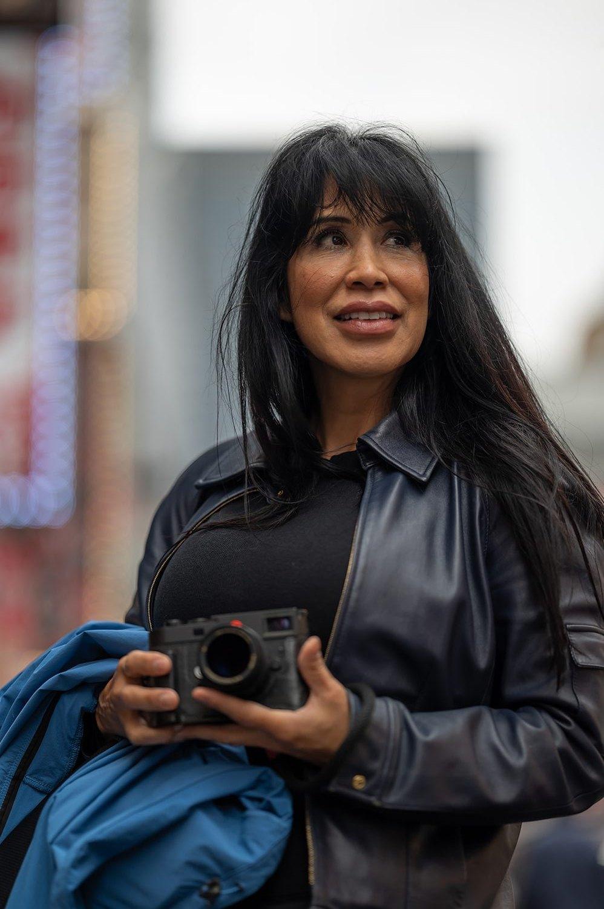
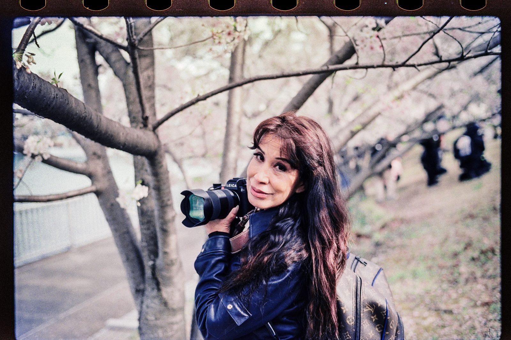
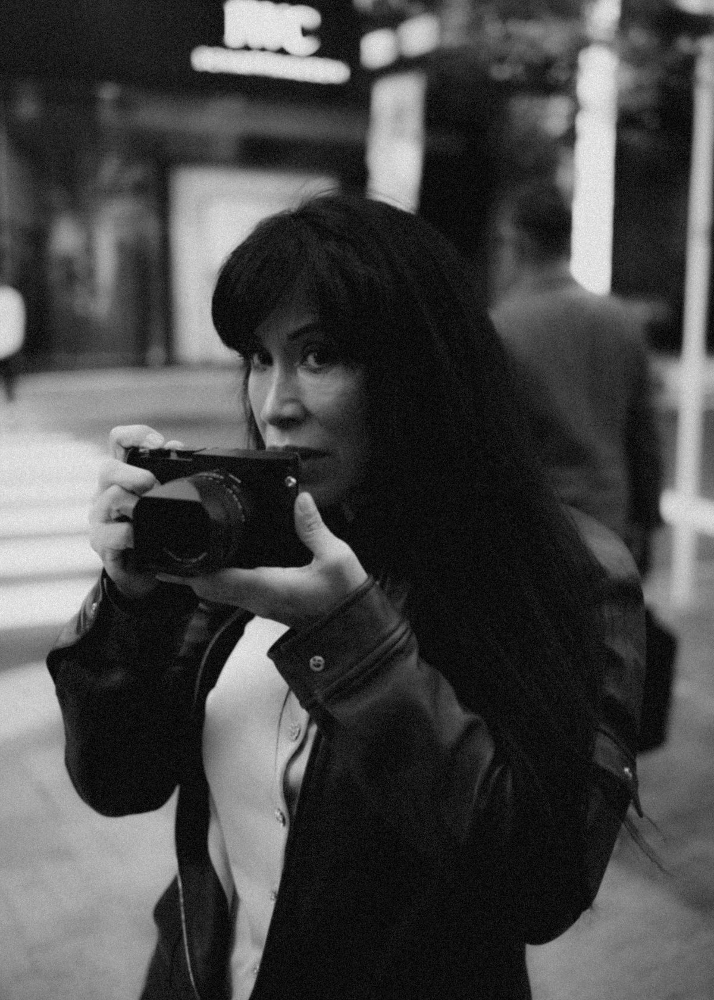
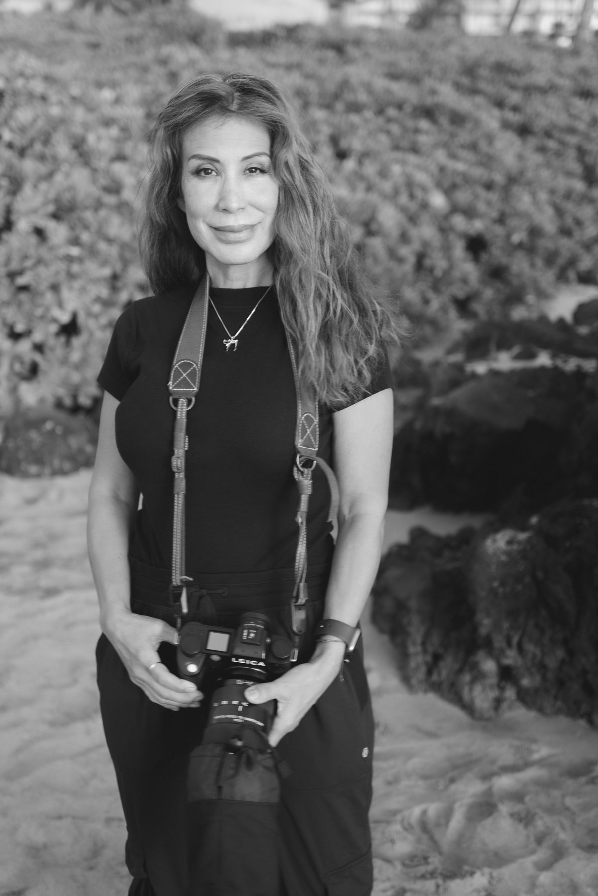
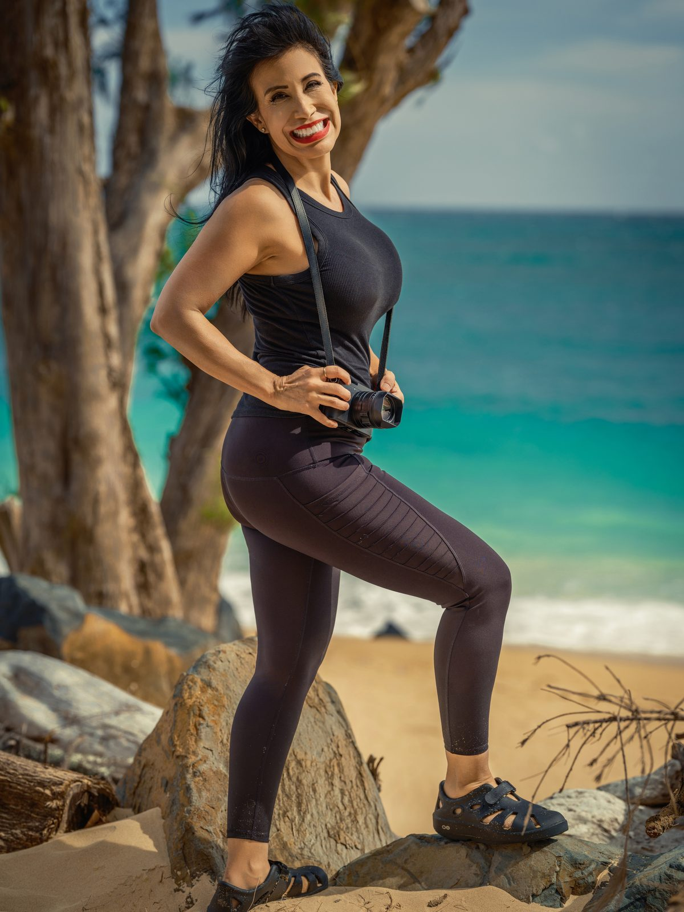
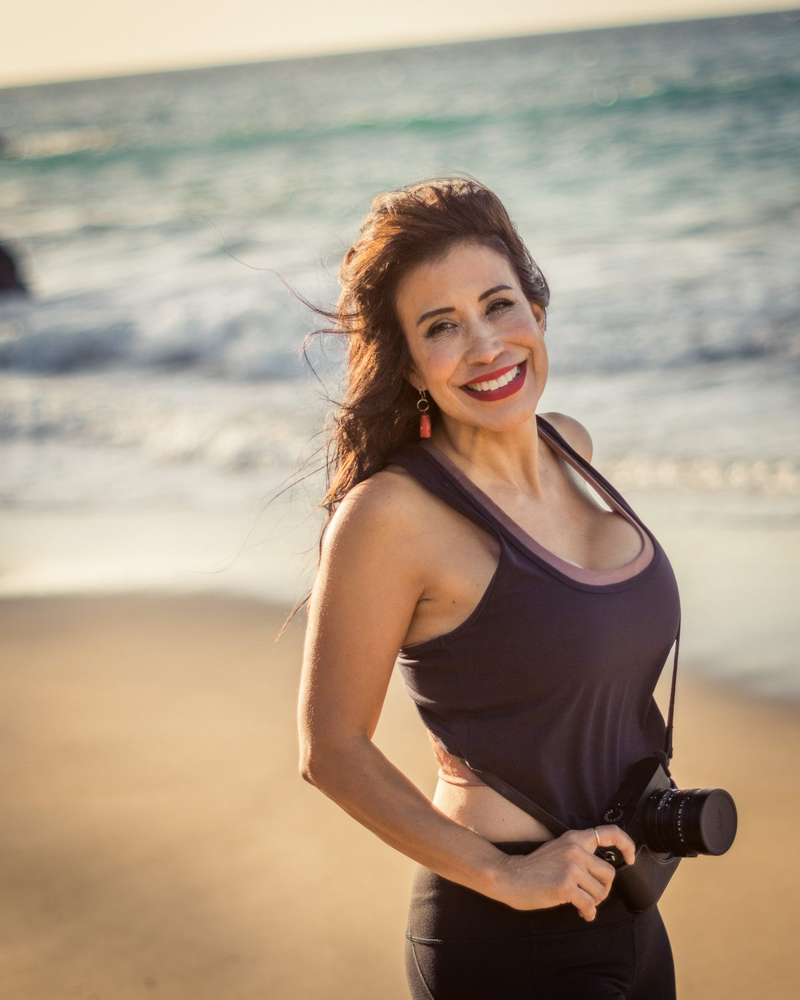

Jude Balter
Photographer, Wailea Photo

A distinct eye for black and white.
Jude Balter is Laurence Balter's wife, co-owner of Wailea Photo and its black-and-white specialist, with 25 years behind the camera, bringing a timeless, editorial style to the family's work.
Jude photographs family portraits, couples sessions and weddings across Wailea, Makena and South Maui as part of the family-run Wailea Photo team.
View Sessions & Pricing"Black and white strips everything back to what actually matters — the light, the connection, the moment."
A different way of seeing.
Jude brings a black-and-white sensibility to Wailea Photo, pairing the same natural light and unhurried direction that has defined the studio for more than 25 years with a timeless, editorial finish.
Like every Wailea Photo session, Jude's sessions are shot personally — never handed off to an outside contractor.
Jude at work.




